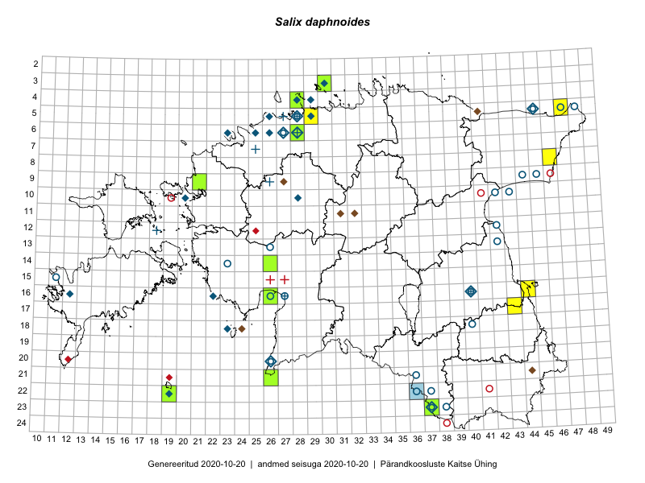

Salix daphnoides — härmpaju
Salicaceae :: Salix daphnoides Vill. (164)

Kaart põhineb 175 kirjel:
vaatlusi 34
herbaareksemplare 130
PKÜ kirjeid1 10
ELFi kirjeid2 1
Taime kaasaegsed ja ajaloolised leiukohad asuvad 55 ruudus.
Tingmärgid ja leidudega ruutude arvud periooditi uues (u) ja 2005 andmestikus (v)
| █ | vahemik | u3 | v4 |
|---|---|---|---|
| █ | 2006–2020 | 15 | – |
| ◆/◇ | 1971–2005 | 27 | 16 |
| ○ | 1921–1970 | 24 | 16 |
| + | kuni 1920 | 8 | 2 |
| × | hävinud | – | 0 |
| ? | kaheldav | – | 0 |
| Ruut | Leidja(d) | Leiuaeg | Kirje |
|---|---|---|---|
| 09-21 | Ott Luuk | 2019-08-23 | TAA0150275: Salix daphnoides Vill. |
| 09-21 | Ott Luuk | 2019-08-23 | TAA0150276: Salix daphnoides Vill. |
| 09-21 | Ott Luuk | 2019-08-23 | TAA0150277: Salix daphnoides Vill. |
| 04-28 | Ott Luuk | 2018-09-07 | TAA0146022: Salix daphnoides Vill. |
| 04-28 | Ott Luuk | 2018-09-07 | TAA0146023: Salix daphnoides Vill. |
| 14-26 | Indrek Tammekänd | 2017-09-04 | TAA0143694: Salix daphnoides Vill. |
| 05-29 | Sander Laherand, Toomas Kukk | 2016-09-29 | punkt: Salix daphnoides Vill. |
| 22-19 | Meeli Mesipuu, Ott Luuk | 2016-09-11 | TAA0144079: Salix daphnoides Vill. |
| 22-19 | Meeli Mesipuu, Ott Luuk | 2016-09-11 | TAA0144080: Salix daphnoides Vill. |
| 05-29 | Toomas Kukk, Sander Laherand | 2016-08-29 | ruut/ala: Salix daphnoides Vill. |
| 21-26 | Sirje Azarov, Indrek Tammekänd | 2016-07-18 | ruut/ala: Salix daphnoides Vill. |
| 21-26 | Indrek Tammekänd, Sirje Azarov | 2016-07-18 | TAA0137586: Salix daphnoides Vill. |
| 21-26 | Indrek Tammekänd, Sirje Azarov | 2016-07-18 | TAA0137587: Salix daphnoides Vill. |
| 06-28 | Mari Reitalu, Olev Abner, Ester Valdvee, Tõnu Ploompuu | 2016-06-18 | ruut/ala: Salix daphnoides Vill. |
| 23-37 | Maret Gerz, Liina Oja | 2016-06-15 | TAA0133757: Salix daphnoides Vill. |
| 03-30 | Jana-Maria Habicht | 2015-08-11 | TAM0131717: Salix daphnoides Vill. |
| 16-44 | Toomas Kukk, Eerik Leibak | 2015-07-29 | ruut/ala: Salix daphnoides Vill. |
| 08-46 | Thea Kull, Eerik Leibak | 2015-07-23 | ruut/ala: Salix daphnoides Vill. |
| 05-47 | Tiit Hallikma, Toomas Kukk | 2015-07-22 | ruut/ala: Salix daphnoides Vill. |
| 16-26 | Meeli Mesipuu | 2015-07-18 | ruut/ala: Salix daphnoides Vill. |
| 16-26 | Meeli Mesipuu | 2015-07-18 | TAA0145186: Salix daphnoides Vill. |
| 16-26 | Meeli Mesipuu | 2015-07-18 | TAA0145187: Salix daphnoides Vill. |
| 09-21 | Kadi-Liis Kesler, Tõnu Ploompuu | 2015-07-14 | ruut/ala: Salix daphnoides Vill. |
| 09-21 | Kadi-Liis Kesler, Tõnu Ploompuu | 2015-07-14 | TAA0148294: Salix daphnoides Vill. |
| 17-43 | Thea Kull, Eerik Leibak | 2015-07-05 | ruut/ala: Salix daphnoides Vill. |
| 03-30 | Mari Reitalu, Tõnu Ploompuu, Ott Luuk, Peedu Saar | 2014-06-01 | ruut/ala: Salix daphnoides Vill. |
| 22-36 | Riinu Ots | 2010-07-27 | ELF: 20125 |
| 04-28 | Anu Kaur | 2009-08-15 | TALL A009277: Salix daphnoides Vill. |
| 06-28 | Olev Abner | 2008-05-20 | TALL A009051: Salix daphnoides Vill. |
| 06-28 | Toomas Kukk | 2006-07-27 | TAA0098590: Salix daphnoides Vill. |
| 06-28 | Olev Abner | 2006-05-28 | TALL A009048: Salix daphnoides Vill. |
| 04-28 | 2002-08-21 | TALL A006586: Salix daphnoides Vill. | |
| 11-31 | Silvia Sepp, Raul Pihu | 2002-06-08 | PKÜ: 9798 |
| 11-32 | Silvia Sepp, Raul Pihu | 2002-06-08 | PKÜ: 9777 |
| 11-31 | Silvia Sepp, Raul Pihu | 2002-06-08 | PKÜ: 9796 |
| 06-23 | Ülle Reier | 2001-09-22 | TAA0098615: Salix daphnoides Vill. |
| 09-27 | Erki Uustalu, Ülle Reier | 2000-10-15 | PKÜ: 3334 |
| 05-41 | Toomas Kukk, Eerik Leibak | 2000-10-03 | PKÜ: 3776 |
| 21-44 | Reelika Rohtla, Bert Holm | 2000-09-10 | PKÜ: 3594 |
| 21-44 | Kai Vellak, Ain Vellak | 2000-09-10 | PKÜ: 5726 |
| 05-28 | H. Aasamaa | 2000-08-20 | TAM0127812: Salix daphnoides Vill. |
| 05-28 | H. Aasamaa | 2000-08-20 | TAM0127813: Salix daphnoides Vill. |
| 05-28 | H. Aasamaa | 2000-08-20 | TAM0127814: Salix daphnoides Vill. |
| 05-28 | H. Aasamaa | 2000-08-20 | TAM0127815: Salix daphnoides Vill. |
| 05-28 | H. Aasamaa | 2000-08-20 | TAM0127816: Salix daphnoides Vill. |
| 05-29 | H. Aasamaa | 2000-08-19 | TAM0127818: Salix daphnoides Vill. |
| 05-29 | H. Aasamaa | 2000-08-19 | TAM0127819: Salix daphnoides Vill. |
| 05-29 | H. Aasamaa | 2000-08-19 | TAM0127821: Salix daphnoides Vill. |
| 05-29 | H. Aasamaa | 2000-08-18 | TAM0127820: Salix daphnoides Vill. |
| 16-40 | Mare Leis, Katrin Heinsoo | 2000-08-06 | PKÜ: 4059 |
| 06-28 | Toomas Kukk | 2000-08-03 | ruut/ala: Salix daphnoides Vill. |
| 06-26 | H. Aasamaa | 2000-07-25 | TAM0127809: Salix daphnoides Vill. |
| 06-26 | H. Aasamaa | 2000-07-25 | TAM0127810: Salix daphnoides Vill. |
| 06-26 | H. Aasamaa | 2000-07-25 | TAM0127811: Salix daphnoides Vill. |
| 05-29 | H. Aasamaa | 1999-10-08 | TAM0127822: Salix daphnoides Vill. |
| 05-29 | H. Aasamaa | 1999-10-08 | TAM0127823: Salix daphnoides Vill. |
| 05-29 | H. Aasamaa | 1999-10-08 | TAM0127824: Salix daphnoides Vill. |
| 05-29 | H. Aasamaa | 1999-10-08 | TAM0127825: Salix daphnoides Vill. |
| 18-23 | Celia Hirmo, Kaire Lanno | 1999-07-23 | PKÜ: 1835 |
| 18-23;18-24 | Elle Roosaluste | 1999-07-22 | PKÜ: 1842 |
| 18-23 | Elle Roosaluste | 1999-07-19–1999-07-23 | ruut/ala: Salix daphnoides Vill. |
| 23-37 | Toomas Kukk | 1999-06-05 | ruut/ala: Salix daphnoides Vill. |
| 10-28 | H. Aasamaa | 1998-10-13 | TAM0127830: Salix daphnoides Vill. |
| 05-28 | H. Aasamaa | 1998-07-02 | TAM0127828: Salix daphnoides Vill. |
| 05-26 | T. Kull | 1998-07 | ruut/ala: Salix daphnoides Vill. |
| 06-23 | Toomas Kukk | 1996-10-13 | TAA0098608: Salix daphnoides Vill. |
| 05-28 | Jaak Sultson | 1996-09-09 | TALL A009940: Salix daphnoides Vill. |
| 05-28 | Jaak Sultson | 1996-05-03 | TALL A009985: Salix daphnoides Vill. |
| 05-28 | Jaak Sultson | 1996-05-02 | TALL A009984: Salix daphnoides Vill. |
| 18-23 | Jaak Sultson | 1995-08-16 | TALL A010252: Salix daphnoides Vill. |
| 18-23 | Jaak Sultson | 1995-08-15 | TALL A010253: Salix daphnoides Vill. |
| 05-28 | Jaak Sultson | 1995-05-02 | TALL A009986: Salix daphnoides Vill. |
| 05-28 | Toomas Kukk | 1994-05-28 | ruut/ala: Salix daphnoides Vill. |
| 03-30 | Mare Liik | 1993-08-10 | TALL A006584: Salix daphnoides Vill. |
| 06-28 | Toomas Kukk | 1993-08-03–1994-05-28 | ruut/ala: Salix daphnoides Vill. |
| 10-20 | Toomas Kukk, Elle Roosaluste | 1993-07-16–1994-05-24 | ruut/ala: Salix daphnoides Vill. |
| 05-28 | Toomas Kukk | 1992-08-02–1994-05-27 | ruut/ala: Salix daphnoides Vill. |
| 05-28 | Toomas Kukk | 1992-08-01–1994-05-27 | ruut/ala: Salix daphnoides Vill. |
| 05-28 | Toomas Kukk | 1992-08-01 | ruut/ala: Salix daphnoides Vill. |
| 04-29 | Toomas Kukk | 1990-08-23 | TAA0098633: Salix daphnoides Vill. |
| 06-28 | Toomas Kukk | 1990-05-19 | TAA0098581: Salix daphnoides Vill. |
| 06-28 | Toomas Kukk | 1989-07-27 | TAA0098579: Salix daphnoides Vill. |
| 06-28 | Toomas Kukk | 1989-07-27 | TAA0098580: Salix daphnoides Vill. |
| 06-28 | Toomas Kukk | 1989-07-27 | TAA0098605: Salix daphnoides Vill. |
| 05-28 | Õie Jaagomäe | 1988–1989 | ruut/ala: Salix daphnoides Vill. |
| 06-27 | Tõnu Ploompuu | 1988 | ruut/ala: Salix daphnoides Vill. |
| 06-28 | Toomas Kukk | 1987-04-25 | TAA0098569: Salix daphnoides Vill. |
| 06-28 | Toomas Kukk | 1987-04-25 | TAA0098570: Salix daphnoides Vill. |
| 06-28 | Toomas Kukk | 1987-04-25 | TAA0098574: Salix daphnoides Vill. |
| 06-28 | Toomas Kukk | 1987-04-25 | TAA0098575: Salix daphnoides Vill. |
| 06-26 | Heinrich Aasamaa | 1986-10-05 | TAM0054624: Salix daphnoides Vill. |
| 06-26 | Heinrich Aasamaa | 1986-10-05 | TAM0054623: Salix daphnoides Vill. |
| 05-28 | H. Aasamaa | 1986-10-01 | TAM0127817: Salix daphnoides Vill. |
| 16-22 | H. Krall, N. Ingerpuu | 1986-06-21 | ruut/ala: Salix daphnoides Vill. |
| 06-26 | H. Aasamaa | 1985 | ruut/ala: Salix daphnoides Vill. |
| 05-45 | Jüri Elliku | 1984-06-05 | TALL A006445: Salix daphnoides Vill. |
| 18-23 | T. Ksenofontova | 1981-06-30–1981-07-02 | ruut/ala: Salix daphnoides Vill. |
| 16-12 | Linda Viljasoo, A. Toomel, Maret Kask | 1980-08 | ruut/ala: Salix daphnoides Vill. |
| 20-26 | V. Kuusk | 1980-06 | ruut/ala: Salix daphnoides Vill. |
| 06-25 | M. Kask, L. Viljasoo | 1978-09 | ruut/ala: Salix daphnoides Vill. |
| 18-23 | TRÜ tudengid | 1973-07-14–1973-07-28 | ruut/ala: Salix daphnoides Vill. |
| 18-23 | TRÜ tudengid | 1973-07-14–1973-07-28 | ruut/ala: Salix daphnoides Vill. |
| 18-23 | TRÜ tudengid | 1973-07-14–1973-07-18 | ruut/ala: Salix daphnoides Vill. |
| 18-23 | M. Kask | 1973-06-11 | TAA0098566: Salix daphnoides Vill. |
| 22-19 | M. Kask | 1973-06-06 | TAA0098576: Salix daphnoides Vill. |
| 22-19 | M. Kask | 1973-06-06 | TAA0098577: Salix daphnoides Vill. |
| 22-19 | M. Kask | 1973-06-06 | TAA0098578: Salix daphnoides Vill. |
| 22-19 | Linda Viljasoo | 1972-09-19 | TAA0098632: Salix daphnoides Vill. |
| 22-19 | Linda Viljasoo | 1972-09-18 | TAA0098609: Salix daphnoides Vill. |
| 05-45 | Linda Viljasoo, V. Meriste | 1972-08 | ruut/ala: Salix daphnoides Vill. |
| 13-26 | Heinrich Aasamaa | 1969-09-30 | TAM0136331: Salix daphnoides Vill. |
| 16-40 | Linda Viljasoo | 1964-07-29 | TAA0098624: Salix daphnoides Vill. |
| 16-40 | Linda Viljasoo | 1964-07-29 | TAA0098625: Salix daphnoides Vill. |
| 23-37 | Agnes Ojaveer | 1964-07-24 | TAA0098606: Salix daphnoides Vill. |
| 23-38 | Agnes Ojaveer | 1964-07-24 | TAA0098612: Salix daphnoides Vill. |
| 09-45 | Silvia Talts | 1961-08-17 | TAA0098616: Salix daphnoides Vill. |
| 09-45 | Silvia Talts | 1961-08-17 | TAA0098617: Salix daphnoides Vill. |
| 09-45 | Aivi Elias, Agnes Ojaveer | 1961-08-17 | TAA0098618: Salix daphnoides Vill. |
| 09-45 | Aivi Elias, Agnes Ojaveer | 1961-08-17 | TAA0098619: Salix daphnoides Vill. |
| 05-47 | Silvia Talts | 1961-08-08 | TAA0098614: Salix daphnoides Vill. |
| 05-48 | Vilma Kuusk, Agnes Ojaveer | 1961-08-03 | TAA0098620: Salix daphnoides Vill. |
| 05-48 | Vilma Kuusk, Agnes Ojaveer | 1961-08-03 | TAA0098621: Salix daphnoides Vill. |
| 18-40 | K. Eichwald | 1961-06-17 | TU268401: Salix daphnoides Vill. |
| 15-11 | K. Pork | 1960-08-28 | TAA0098599: Salix daphnoides Vill. |
| 15-11 | K. Pork | 1960-08-28 | TAA0098600: Salix daphnoides Vill. |
| 15-11 | K. Pork | 1960-08-28 | TAA0098601: Salix daphnoides Vill. |
| 16-27 | Linda Viljasoo, H. Karu | 1960-05-13 | TAA0098589: Salix daphnoides Vill. |
| 16-27 | H. Karu, Linda Viljasoo | 1960-05-13 | TAA0098592: Salix daphnoides Vill. |
| 16-26 | Linda Viljasoo, H. Karu | 1960-05-12 | TAA0098596: Salix daphnoides Vill. |
| 16-26 | H. Karu, Linda Viljasoo | 1960-05-12 | TAA0098591: Salix daphnoides Vill. |
| 16-26 | H. Karu, Linda Viljasoo | 1960-05-12 | TAA0098595: Salix daphnoides Vill. |
| 16-40 | Linda Viljasoo | 1960-05-10 | TAA0098585: Salix daphnoides Vill. |
| 16-40 | Linda Viljasoo | 1960-05-10 | TAA0098586: Salix daphnoides Vill. |
| 20-26 | H. Veroman | 1959-10-12 | TAA0098607: Salix daphnoides Vill. |
| 09-44 | Linda Viljasoo, H. Karu | 1959-10-06 | TAA0098626: Salix daphnoides Vill. |
| 05-45 | Aleksei Paivel | 1959-07-25 | TALL A006585: Salix daphnoides Vill. |
| 10-42 | Linda Viljasoo | 1959-06-05 | TAA0098587: Salix daphnoides Vill. |
| 23-37 | Visolde Puusepp | 1959-05-07 | TAA0098572: Salix daphnoides Vill. |
| 23-37 | Visolde Puusepp | 1959-05-07 | TAA0098573: Salix daphnoides Vill. |
| 10-43 | Visolde Puusepp | 1959-05-05 | TAA0098588: Salix daphnoides Vill. |
| 10-43 | Visolde Puusepp | 1959-05-05 | TAA0098594: Salix daphnoides Vill. |
| 13-42 | H. Karu, Linda Viljasoo | 1958-10-23 | TAA0098622: Salix daphnoides Vill. |
| 05-28 | N. Mikelsaar | 1958-10-02 | TAA0098598: Salix daphnoides Vill. |
| 23-37 | H. Karu | 1958-06-06 | TAA0098582: Salix daphnoides Vill. |
| 23-37 | H. Karu | 1958-06-06 | TAA0098583: Salix daphnoides Vill. |
| 23-37 | H. Karu | 1958-06-06 | TAA0098584: Salix daphnoides Vill. |
| 23-37 | H. Karu | 1958-06-06 | TAA0098602: Salix daphnoides Vill. |
| 23-37 | H. Karu | 1958-06-06 | TAA0098628: Salix daphnoides Vill. |
| 21-36 | Viive Kõvask, Ella Tammemägi | 1957-08-21 | TAA0098623: Salix daphnoides Vill. |
| 22-37 | Linda Viljasoo | 1957-08-18 | TAA0098630: Salix daphnoides Vill. |
| 22-37 | Linda Viljasoo | 1957-08-18 | TAA0098631: Salix daphnoides Vill. |
| 23-38 | Vilma Kuusk, T. Nurmiste | 1957-08-10 | TAA0098627: Salix daphnoides Vill. |
| 23-37 | Linda Viljasoo | 1957-08-09 | TAA0098613: Salix daphnoides Vill. |
| 22-36 | A. Sooman | 1957-07-17 | TAA0098629: Salix daphnoides Vill. |
| 06-27 | J. Kaasik, K. Kalamees | 1956-07-02 | TAA0098603: Salix daphnoides Vill. |
| 06-27 | J. Kaasik, K. Kalamees | 1956-07-02 | TAA0098604: Salix daphnoides Vill. |
| 10-43 | G. Palm | 1956-06-29 | TAA0098610: Salix daphnoides Vill. |
| 12-42 | G. Palm | 1956-06-20 | TAA0098611: Salix daphnoides Vill. |
| 16-26 | P. Kaaret | 1936-08 | ruut/ala: Salix daphnoides Vill. |
| 15-11 | Elsa Pastak | 1933 | TAA0098597: Salix daphnoides Vill. |
| 10-43 | A. Vaga | 1932-06-17 | TU268403: Salix daphnoides Vill. |
| 16-26 | T. Lippmaa | 1931-05-23 | TU268406: Salix daphnoides Vill. |
| 16-26 | T. Lippmaa | 1931-05-23 | TU268407: Salix daphnoides Vill. |
| 14-23 | S. Kaaber | 1926-07-04 | TU268402: Salix daphnoides Vill. |
| 05-47 | Albert Üksip | 1925-07-12 | TU268408: Salix daphnoides Vill. |
| 05-27 | Joh. Aidas | 1907-04-22–1907-08-27 | TU268405: Salix daphnoides Vill. |
| 06-28 | E. Niclasen | 1907-04-22–1907-08-27 | TAM0096097: Salix daphnoides Vill. |
| 06-28 | E. Niclasen | 1907-04-22–1907-08-27 | TAM0096098: Salix daphnoides Vill. |
| 05-28 | E. Niclasen | 1907-04-22–1907-08-27 | TAM0096099: Salix daphnoides Vill. |
| 07-25 | E. Niclasen | 1907-04-22–1907-07-27 | TAM0096634: Salix daphnoides Vill. |
| 16-40 | H. Hiir | 1880-05 | TU268409: Salix daphnoides Vill. |
| 16-27 | E. Niclasen | 1880-05 | TAM0096096: Salix daphnoides Vill. |
| 12-18 | C. Winkler | 1872 | TAA0098567: Salix daphnoides Vill. |
| 05-28 | H. Kapp | 1856–1889 | TAA0098568: Salix daphnoides Vill. |
| 09-26 | G. Pahnsch | TAM0113646: Salix daphnoides Vill. |
Pärandkoosluste Kaitse Ühingu (PKÜ) andmebaas sisaldab inventeeritud koosluste kirjeldusi ja liigiloendeid. Kõige enam on andmeid niidutaimede kohta.↩︎
Eestimaa Looduse Fondi (ELF) andmebaas sisaldab inventeeritud koosluste kirjeldusi ja liigiloendeid. Eriti rohkesti on andmeid märgalade kohta.↩︎
Ruutude arv uue atlase andmekogu järgi. Muuhulgas arvestab vanemat herbaariumi, 2005. aasta atlase välitöölehtedelt uuesti digitaliseeritud andmeid jne. Uue atlase andmekogust pärinevad andmed on kaardile kantud siniste sümbolitega.↩︎
Ruutude arv 2005. aasta atlase (Kukk, T., Kull, T., Eesti taimede levikuatlas. Eesti Maaülikool, Põllumajandus- ja Keskkonnainstituut, Tartu, 2005) järgi. Andmeallikana on kasutatud levik.exe programmi, kus igas ruudus on registreeritud vaid uusim leid. Seetõttu on vanemate perioodide kohta andmed puudulikud. Kasutatud levik.exe andmestikus leidub mõningaid kõrvalekaldeid atlase trükis ilmunud versioonist, sagedamini tarnade ja käpaliste seas. Lisaks leidub selles andmestikus valik liike (peamiselt väheste leidudega tulnuktaimed), mille kaarte trükis ei avaldatud. Vana atlase andmed ruutudest, milles ei ole uue atlase andmekogus leide enne 2006. aastat, on kaardil esitatud punaste sümbolitega. Vana atlase andmetel hävinud ja kaheldavaid leiukohti pole hilisemate (taas)leidude põhjal korrigeeritud.↩︎